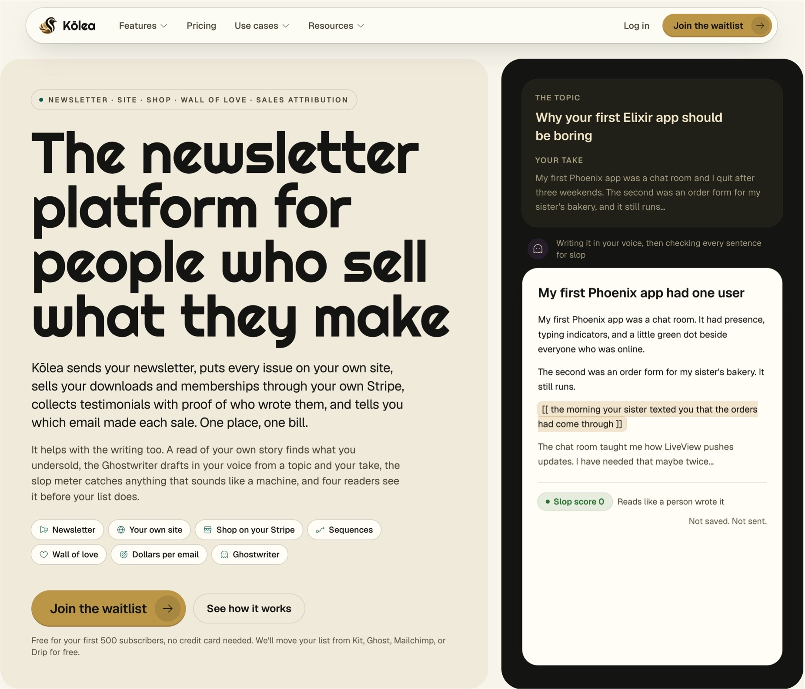
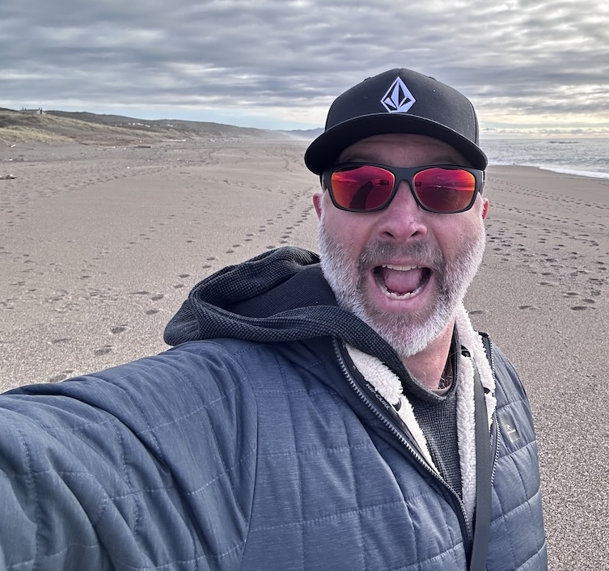
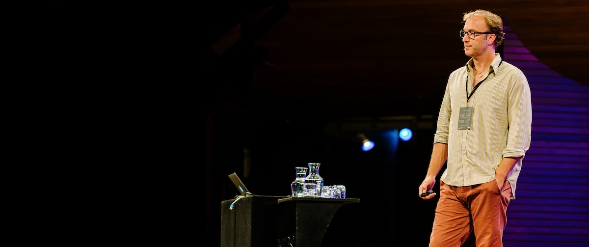

Not just faster. Better, and a lot more interesting. I've spent 20 years teaching developers through books, courses, videos and conference talks, and these days most of that energy goes into showing teams how to work with AI without losing their minds or their craft.
Hi, I'm Rob. I help software teams adopt AI so they can build better software, and I've spent 20 years teaching developers through books, courses, videos, and conference talks. I wrote The Imposter's Handbook, co-founded Tekpub, made This Developer's Life with Scott Hanselman, and worked at Microsoft twice. I live in Honolulu, where I run Big Machine and I'm building Kōlea.
What I'm doing now
Three things, one person.
I've been independent since 2025, working under my own company, Red:4 Aerospace. It started as the fictional company in my book A Curious Moon (its CTO is a character named Rob), and I made it real. Red 4 is Mars, and why call yourself "Technologies" when you can start your own aerospace company?
01 · BIG MACHINE CONSULTING
AI adoption consulting
Through Big Machine I help companies adopt AI and help teams skill up. Most of the talk is about building software faster. I care about building it better, and about teams turning sets of AI skills into working systems I call machines. I also do forward-deployed engineering when a team wants someone in the room.
My first brand, and where the books, courses and newsletter live. Video production is most of what I do day to day. Tens of thousands of students have come through, and The Imposter's Handbook is the book that put it on the map.
You write once and Kōlea sends it to your email list and posts it on your own site. Signup pages, landing pages, a templated blog, and a store that sells through your own Stripe account all live in the same place. It's for people who write and sell what they make: authors, course creators, educators, newsletter writers, podcasters.
It started as an experiment to see if I could run my own email list server with sequences. It worked, so I kept going.
01The slop meter. Scores a draft 0 to 100 for machine-sounding writing, in the browser, with no AI involved.
02The reader council. AI readers modeled on your audience, plus an editor, review each draft and never change a word.
03Sales attribution. Every sale traced back to the email that made it. Launch Studio and verified-buyer testimonials come along too.
See Kōlea Free for your first 500 subscribers, with free migration from Kit, Ghost, Mailchimp or Drip.

The long version
A geologist walks into a database.

Fig. 2 · Field work
I studied geology at UC Santa Barbara, with a minor in computer science, and spent my first five years out of school working as a geologist. I was also the office geek, the one who put all of our analytical data into Access and ran the reports. In 1997 a friend called and asked if I knew you could hook a website up to a database. I didn't, so he showed me, and that was the end of my geology career.
We started a consulting company called Persistent Web that same year. I was the CTO, and we grew to more than 30 developers during the dot-com years. In 2004 I moved to Hawaii with my family, fully intending to quit tech and drive fishing boats. My friends kept calling with work (PayPal, Visa, Starbucks, Google), and then I wrote the Commerce Starter Kit for ASP.NET 2.0. Scott Guthrie called after that and asked if I wanted to work at Microsoft.
I joined the ASP.NET team in 2006 as one of its first developer relations people, working on ASP.NET MVC with Scott Hanselman, Phil Haack, and Scott Guthrie. We wrote Professional ASP.NET MVC 1.0 together and called ourselves the Five Heads, which is a hairline joke. I've also written a few open source data access tools over the years: SubSonic and Massive for .NET, MassiveJS for Node, and Moebius for Elixir.
In 2009 James Avery and I started Tekpub, one of the first online video learning sites for developers. Pluralsight bought it in 2014. Somewhere in there Scott Hanselman and I made a podcast called This Developer's Life, which was the number one tech podcast for a while. That still surprises me.
I started Big Machine in 2016 and published The Imposter's Handbook, a computer science primer for self-taught developers who don't have a CS degree. I spent two years researching it and a year writing it, and then I kept working on it for years after that. It has sold over 30,000 copies. I also wrote A Curious Moon, which is a science fiction story and a Postgres tutorial at the same time.
If you ask me which database to use, the answer is Postgres. I think it's the best-run software project in history.
From 2018 to 2025 I was back at Microsoft. I led engineering for Learn TV, then worked with the VS Code team on Copilot, where I built training for the Azure Core engineering team and gave it to 800 people at a time. I also made videos for the VS Code YouTube channel. I've been speaking at conferences since 2006, mostly NDC, including one Node.js talk in Oslo where I never said a word.
These days I work for myself under a company called Red:4 Aerospace. It was a fictional company in A Curious Moon and I made it real. I help teams adopt AI. Most of the talk about AI is about building software faster. I care more about building it better, and making things that are more interesting. I'm also building Kōlea, a newsletter and sales platform for people who write and sell what they make. It's the best software I've ever made.
I've lived in Hawaii for more than 20 years and raised my family here. If you'd like to work together, bigmachine.io is the place to start.
Where I've been
Founder, CTO, lead engineer. Usually a one-person show.
Drawn the way a geologist would: a stratigraphic column, youngest rock on top, bedrock at the bottom. Postgres, Ruby, Elixir and JavaScript along the way, with C# from time to time.
2025 →
Independent: Red:4 Aerospace, Big Machine, Kōlea
CTO of my own company. AI adoption consulting, forward-deployed engineering, video production, and building Kōlea solo.
Topsoil · still forming
2018–2025
Microsoft, second time around
Worked with the VS Code team on Copilot: built internal training and delivered it to 800+ people at a time for Azure Core engineering, made videos for the VS Code YouTube channel. Before that, lead engineer on Learn TV, Microsoft's streaming platform for learning. Ran Big Machine the whole time.
2016 →
Big Machine
Courses, books, consulting and a newsletter. Still running.
2014–2016
Pluralsight
Joined as part of the Tekpub acquisition, then left to start Big Machine.
2009–2014
Tekpub, co-founder
Started with James Avery. One of the very first online video learning platforms for developers, and where I built my first audience. Acquired by Pluralsight in 2014.
2006–2009
Microsoft, ASP.NET team
Recruited by Scott Guthrie. Community lead and one of the first developer relations people devoted to ASP.NET MVC, alongside Scott Hanselman and Phil Haack. The four of us wrote Professional ASP.NET MVC 1.0.
2004–2006
Independent contractor, Hawaii
Moved to Hawaii planning to get a captain's license and drive boats. Contracted for PayPal, Visa, Starbucks, Google and eventually Microsoft instead. Wrote the Commerce Starter Kit for ASP.NET 2.0, which led to the call from Scott Guthrie.
2002–2004
CTO, healthcare consultancy
Took the job to spend more time with my young child after the dot-com years.
1997–2002
Persistent Web, co-founder and CTO
Web consulting, started with a friend who was one of the first Microsoft-certified trainers for ASP Classic. Grew to 30+ developers during the boom.
Volcanic ash · the dot-com eruption
→ 1997
Geologist
About five years. UC Santa Barbara, geology with a CS minor. The office geek who put the firm's analytical data into Access and built the reporting. That's what got me into web development.
Computer science for people without a degree. I started in 2014 by working through the CS curricula at Stanford, MIT and others: computation, complexity theory, cryptography, algorithms, lambda calculus, data structures. The first edition shipped in 2016 and hit number one on Hacker News. The second edition (2023) is a full rewrite, 550 pages and 12 chapters with hand-drawn sketches. It's the absolute highlight of my career, and I might write another one for the AI age.
Stories from people across the tech industry, about their motivation, fears, fun, and life. At its peak it was the number one tech podcast. A producer from This American Life called me personally about the name and was gracious about it. That still surprises me.
A science fiction story and a Postgres tutorial at the same time. Deep technically and deep scientifically. Also where Red:4 Aerospace comes from.
Course + book
Take Off with Elixir
One of the first Big Machine tutorials. Video course plus book. Sold very well.
Book
Professional ASP.NET MVC 1.0
Written with Scott Hanselman, Phil Haack and Scott Guthrie. We called ourselves the Five Heads. Hairline joke.
Open source
Code I've left lying around.
Mostly data access, mostly Postgres. The older ones live with their current maintainers now. Everything is at github.com/robconery.
The ones people know me for
Commerce Starter KitFor ASP.NET 2.0, with a big set of videos. Along with the ASP.NET MVC Storefront series, it's how people first came to know me.
SubSonic ↗Data access tool extracted from the Starter Kit. One of the first in the Microsoft space, and extremely popular.
Massive ↗A small micro ORM for .NET that kicked off the micro ORM movement in the Microsoft world.
MassiveJS ↗The Node port. Over 5,000 GitHub stars and once GitHub's repo of the day.
Moebius ↗A functional query tool for Elixir and Postgres. Ten years old and still maintained.
Keeping warm right now
dox ↗A document database API for Postgres, written in PL/pgSQL.
pg-auth ↗A complete authentication system built inside Postgres with schemas and functions.
kolea ↗Broadcasts, drip sequences and transactional email in one Cloudflare Worker.
champion ↗An adversarial AI council for your professional life, as a Claude Code plugin.
Speaking
The one where I didn't say a word.

My first talk was MIX06 in Las Vegas, on the ASP.NET starter kit. Terrifying. For years after that I did three or four conferences a year, mostly NDC in Oslo and London, with crowds of 500 to over 1,000. For a while I held NDC's second most popular talk, behind only Troy Hunt.
The one people remember is NDC Oslo 2012. I was supposed to give a talk about the Tekpub API. About five days before, I threw it out and rebuilt the whole thing as a Node.js talk with no speaking at all. I played music and walked the audience through the code. I've keynoted NDC Porto and ElixirDaze, but I don't do it often; my talks tend to be niche and technical rather than broad.
Topics follow whatever I'm building: Node, Postgres, RethinkDB, Elixir, Firebase and serverless, computer science fundamentals, going solo, and most recently AI and Copilot. I'm speaking less right now, I have invitations, and I'm thinking about coming back.
Conference history
Talk titles are working titles from my own files.
2025NDC London (AI and Copilot demos); NDC Porto (keynote)
2024NDC London
2023NDC Copenhagen; NDC Oslo; .NET Conf: "Make a Template for Your Template"
2022NDC London
2019NDC London: "10 Fun Imposter Things"; NDC Oslo; NDC Sydney
2018ElixirDaze; NDC London: going solo, and a Postgres talk
2017NDC London: "How Hard Would That Be"; NDC Oslo: "Serverless with Firebase"; Peers
2016ElixirDaze; NDC London: "Three and a Half Ways Elixir Changed Me (and Other Hyperbole)"; NDC Oslo: Elixir, what can you build; Øredev
2015DevDay Poland: Postgres and RethinkDB talks
2013NDC London, NDC Oslo, WDCNZ
2012NDC Oslo: the silent Node.js talk, plus a Postgres talk
If you want help getting your team working well with AI, bigmachine.io is the place to start. If you'd rather just read along, the newsletter goes out when I have something to say, and I read every reply.